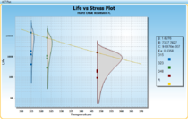
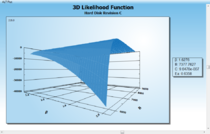

Windchill ALT
formerly Relex ALT
Designed to streamline product development and testing activities, Windchill ALT, or Accelerated Life Testing , enables engineers to analyze data from testing procedures that accelerate stress conditions for parts or systems, causing them to fail more quickly than they would under normal operating conditions. With powerful, built-in mathematical models, Windchill ALT assists in the extrapolation of test results to real-world product failure behavior, shortening analysis time and helping to identify product weaknesses earlier than otherwise possible.
 Quantitative Accelerated Life Testing. Windchill ALT supports all types of test data, including exact, censored (suspended) and interval, which may be entered as single data points or groups. Stresses may include temperature, humidity, vibration, voltage, or a combination of up to ten different stresses. Define stress profiles for each test item to describe changing levels of stress over time. Windchill ALT supports analysis with Weibull, exponential or lognormal distributions, along with life-stress relationships that include Arrhenius, Eyring, Inverse Power Law, Temperature-Humidity, Temperature-Non Thermal, Proportional Hazards and General Log-Linear. Calculate and plot a range of standard life data analysis outputs, such as probability, PDF, reliability and unreliability, along with ALT specific plots for life, standard deviation and acceleration factor vs. stress.
 Advanced Utilities. Windchill ALT supports a range of utilities and related functions to enhance your analyses. The Accelerated Test Planning function supports stress definition and values, typical usage stress, highest stress experienced, number of units, and test duration, then generates results that include recommended stresses and stress combinations for test, allocation of test units proportional to each stress, sample size and expected total time on test. The intuitive summary calculator outputs product reliability at a given product age and stress level, along with warranty times, time to failure, conditional probability and mean life. Windchill ALT also includes a General Statistics Calculator that provides a wide range of useful statistical functions.
Professional Outputs. Windchill ALT is supplied with a range of industry standard reports and graphs. Easy-to-use Report and Graph Wizards provide complete user customization of outputs to fit your specific needs, without the need for IT experts. Once complete, reports and graphs can be printed or saved directly to Microsoft Word or Excel, and Adobe PDF.
Accelerated Life Testing Data Sheet
6507_Windchill_ALT_DS_EN.pdf
Adobe Acrobat document [314.5 KB]